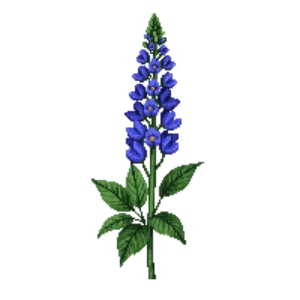

Germander Sage
Salvia chamaedryoides

Germander Sage is a perennial for edging, mid-border, suited to full sun and loam or sandy soil, flowering Apr, May, Jun, Sep, Oct.
| Type | Perennial |
|---|---|
| Mature height | 45 cm |
| Spread | 60 cm |
| Aspect | full sun |
| Foliage | Evergreen |
| Hardiness | USDA 8a-10b |
| Pollinator-friendly | Yes |
| Pet-safe | Yes |
Where to use it in a border
At around 45 cm, it sits best along the front edge, where a low, spreading habit reads best. Give it about 60 cm of room to spread. It is hardy across USDA zones 8a to 10b, so check it suits your area before planting.
It appears in our lists of full sun, sandy soil, evergreen plants, pollinator-friendly plants, pet-safe plants.
Flowering through the year
Worth knowing
- Evergreen, so it keeps the border furnished through winter.
- Its flowers are valued by bees and other pollinators.
Good companions
Plants that share its conditions and style, chosen to complement its place in the border:
- Angelita Daisyto edge in front
- Black Daleato edge in front
- Blackfoot Daisyto edge in front
- Century Plantfor height behind it
- Chihuahuan Sagefor height behind it
- Chuparosafor height behind it
Garden styles
Mediterranean Modern Native Wildlife garden Xeriscape (low-water)
See Germander Sage set in a full border, with spacing and companions worked out for your own conditions, in Border Builder.